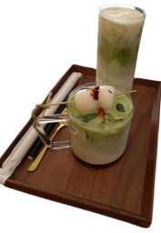

Kan je niet mee misgaan!

Met Moychay's theebar kan je allerlei thee mocktails uit proberen van een warme Chai tot citrus Yerba of neem een thee-to-go, keuze uit meer dan 250 diverse theesoorten direct geteeld zonder tussenverkoop!
Zelf raad ik echter Hojicha aan (mijn gatekeep) een japanse groene thee dat geroosterd is in een porseleinen pot boven houtskool. Het smaakprofiel? licht karamelachtig met nootachtige ondertonen (wordt vergeleken met een koffie-smaakje)


Zelf had ik in het verleden een traditionele thee ceremonie bijgewoont 'Unguided Pin Cha' vertaling uit het manderijns betekent thee proeven.
De theegids leidt je met een klein groepje door het proces van de theeceremonie. Very demure & mindfull is een kort en krachtige omschrijving die ik kan geven van de methode, je giet ten eerst over een leuke thee dier (wat in de moderne tijd van alles kan zijn van oorsprong uit de Chinese thee cultuur, gemaakt van klei, ongeglazuurd met een ruw oppervlak)